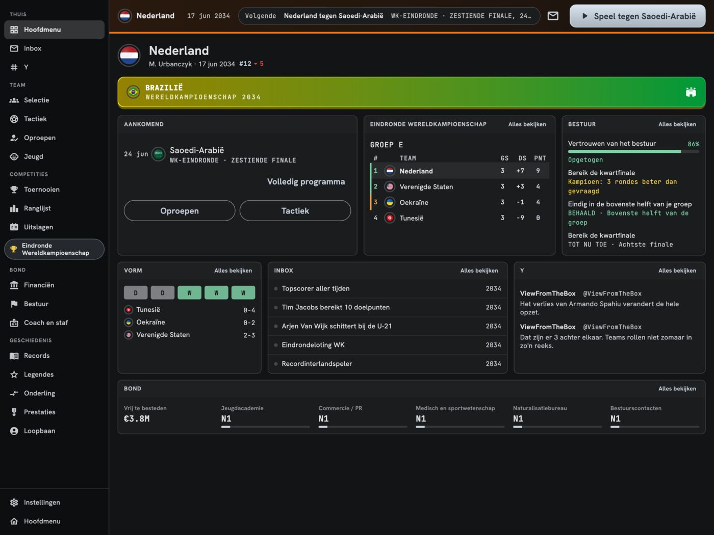
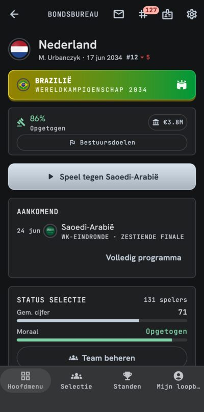
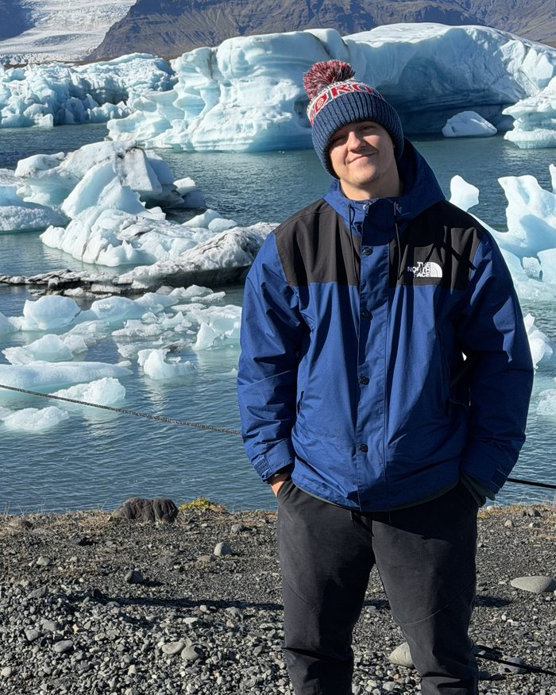

Speelt offline
Elke wedstrijd draait op je telefoon. Geen account, geen internetverbinding. Je kunt je opgeslagen spel later naar een andere telefoon of tablet verhuizen.
209 landen
Spanje of Zimbabwe? Andere uitdagingen, andere problemen. Tussen de cycli kun je ook van land wisselen.
Eindeloze cycli
Kwalificatie, je continentale kampioenschap, het Wereldkampioenschap en... opnieuw. Lotingen, de keuze van het gastland en al het andere dat interlandvoetbal met zich meebrengt.
Nationale stadions
Bekijk je stadions op een kaart, bouw ze uit of zet nieuwe neer. Grotere stadions leveren geld op en helpen wanneer je je kandidaat stelt als gastland.
Organiseer een kampioenschap
Stel je kandidaat voor het Europees Kampioenschap (of dat van je eigen continent) of het Wereldkampioenschap, en haal het toernooi naar huis.
Speler van het Jaar
Elke december stemt de wereld. Staat een van jouw spelers straks op het podium tijdens de ceremonie?
28 talen
De game spreekt 28 talen, nu ook Japans, Koreaans, Hindi, Thai, Maleis en Roemeens.
Live wedstrijden
Wissel van formatie, voer wissels door, krik het moreel op in de rust. Of sluit het gewoon af... en pas op voor de Csaplár-val!
Strafschoppen in eigen hand
Jij kiest de volgorde, en jij neemt ze zelf.
De jeugdpiramide
U-13 tot en met U-21. Volg de jongens vanaf het allereerste begin (jeugdteams komen later).
Spelers tot in detail
Houd belasting en transfers in de gaten. Alles werkt door in moreel en fitheid.
De pers vraagt, de wereld reageert
Pas op: een onbezonnen antwoord bouwt druk op. En op de Y-feed maken ze je met de grond gelijk!
Een eigen loopbaan
Bouw je profiel uit, bepaal de budgetten en de koers van de hele bond, haal je doelen.
Een bestuur om verantwoording aan af te leggen
De stemming van het bestuur is alles. Een kleine misser vergeven ze misschien, maar na een grote flop pak je je koffers. En dan komt het enige aanbod misschien uit Andorra.
Records die blijven
Topscorers aller tijden voor elk land, elk kampioenschap en nog veel meer. De wereld om je heen leeft door, en jij moet bijblijven!
Eén betaling
Geen abonnement, geen advertenties, geen valuta in de game. Nooit.
Een hele cyclus gratis
Speel een hele cyclus gratis, zonder dat er iets wordt achtergehouden. Een uurtje of twee, en je weet of het iets voor jou is.
Gebouwd voor de lange termijn
In ontwikkeling sinds het voorjaar van 2026, en er komt meer aan: jeugdteams, uitdagingen. Vind je het leuk, steun het project dan door de volledige versie te kopen.
Kijk mee op het veld
Volg elke wedstrijd live in de 2D TV-modus. Elk stadion staat in zijn eigen stad, met bezienswaardigheden achter de tribunes, van de Eiffeltoren tot Christus de Verlosser, en het weer speelt mee: regen, sneeuw, mist, nevel, een heldere nacht, onweer of een zandstorm.
Goals, rode kaarten en wissels verschijnen als banner boven het veld. Hoekschoppen en vrije trappen hebben hun eigen opstelling, strafschoppen hun eigen close-up, en een knock-outduel kan uitlopen op een volledige strafschoppenserie, schot na schot.
Bouw je eigen wereld
Met de editor heb je het hele spel in handen: spelers, clubs, stadions, competities en trofeeën, bondscoaches, sponsors, pers en Y-accounts, en de namenlijsten waaruit nieuwe spelers voortkomen. Elke naam kan in elke taal anders luiden.
Exporteer je database als bestand en stuur hem naar vrienden, of importeer die van hen en begin er een loopbaan op. Fans wisselen hun databases ook uit op onze Discord.
In de game
Telefoons
Tablets

Over mij
Ik ben Martin. Ik schrijf software, ik reis en ik ben gek op voetbal. Ik ben opgegroeid met voetbalmanagers in plaats van shooters, en daar komt dit vandaan.
Ik wilde iets snels, dat je op de wc, in de tram en offline in het vliegtuig kunt spelen, maar dat toch echte diepgang heeft en nooit opraakt. Heb je een idee? Kom naar de Discord of stuur me een e-mail.